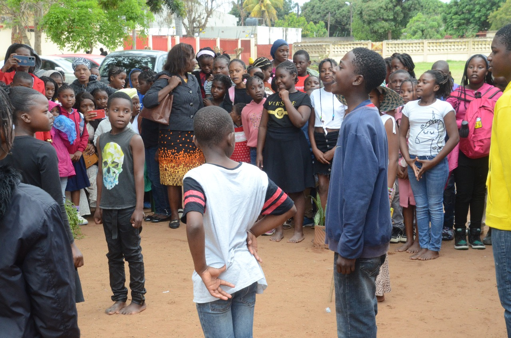
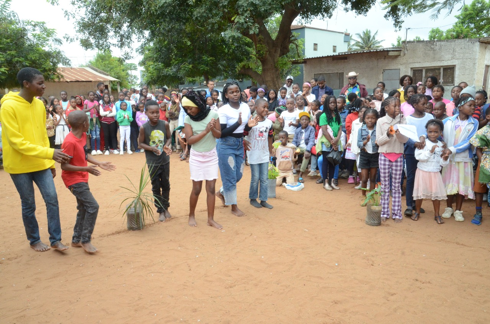
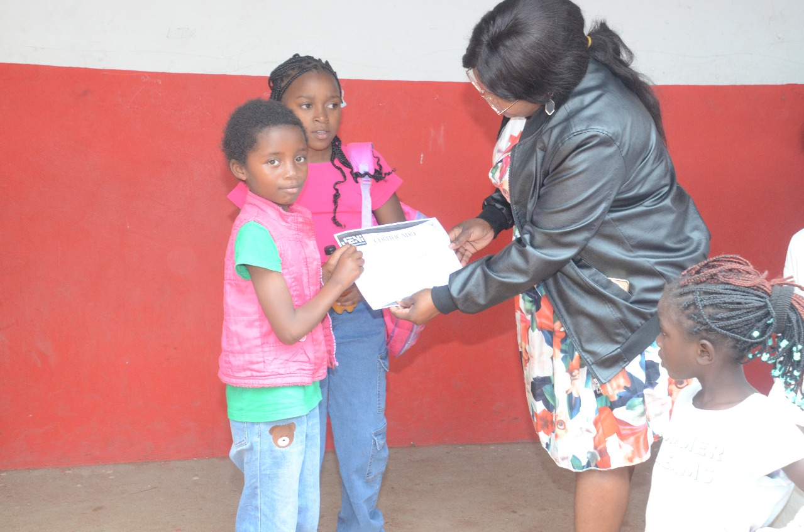
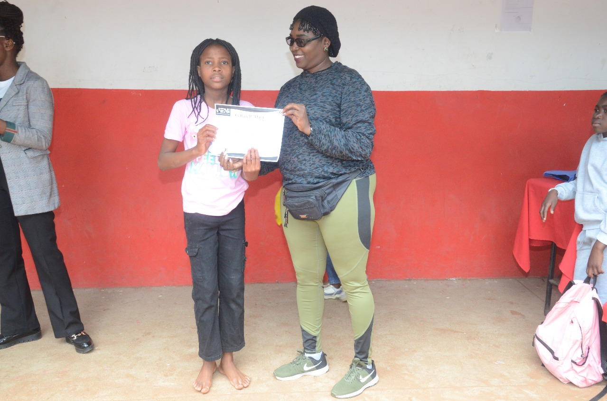
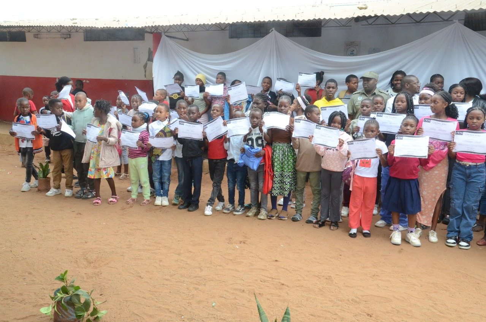
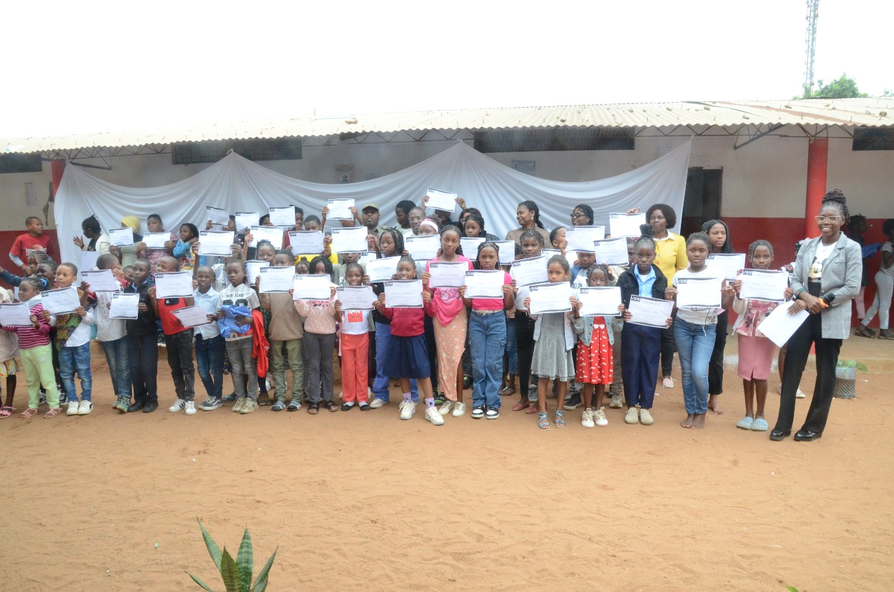
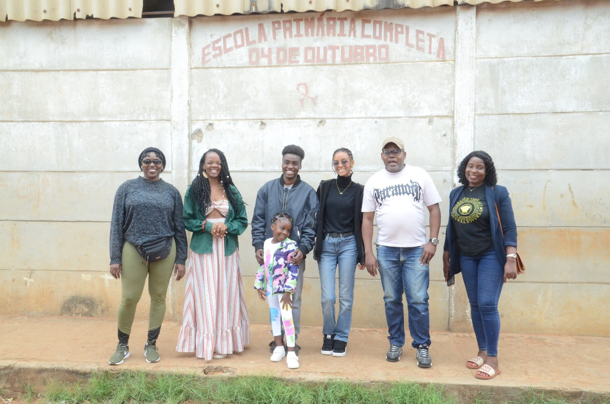

01
Consultoria e Agenciamento de Artistas
Apoio estratégico no desenvolvimento de artistas, gestão de imagem, posicionamento, orientação profissional e oportunidades.
A JENI Empreendimentos é uma empresa dedicada ao desenvolvimento de iniciativas culturais e criativas, actuando nas áreas de consultoria, agenciamento de artistas, produção de eventos, gestão de projectos e produção audiovisual.
Notícias, eventos e oportunidades do sector cultural e criativo em destaque.
Acompanhe informações, destaques e actualizações sobre a 21ª edição do festival e a sua programação.
Encontre chamadas abertas, residências, bolsas, concursos e oportunidades relevantes para o sector criativo.
Explore conteúdos sobre eventos, projectos comunitários, iniciativas criativas e actualidade cultural em Moçambique.
A JENI Empreendimentos é uma empresa criativa sediada em Maputo, vocacionada para o desenvolvimento de iniciativas culturais, projectos artísticos, gestão de eventos, projectos culturais e produção audiovisual.
Desenvolver e implementar projectos culturais e criativos que promovam talento, inovação e impacto social através da arte.
Ser uma referência no desenvolvimento e na produção de iniciativas culturais e criativas em Moçambique, contribuindo para o crescimento sustentável da economia criativa.
A JENI Empreendimentos actua de forma integrada para apoiar artistas, instituições, marcas e projectos criativos com soluções profissionais e culturalmente relevantes.
Apoio estratégico no desenvolvimento de artistas, gestão de imagem, posicionamento, orientação profissional e oportunidades.
Consultoria, planificação, produção e realização de conferências, seminários, workshops, espectáculos e eventos institucionais.
Concepção, coordenação, monitoria e acompanhamento de projectos culturais e criativos com foco em organização e execução.
Produção, design e marketing de conteúdos audiovisuais, imagem e som para projectos culturais, institucionais e criativos.
A JENI Empreendimentos desenvolve iniciativas culturais e criativas com foco em impacto comunitário, valorização de talentos e dinamização da vida cultural.
Projecto em destaque
Estrelas do Meu Bairro é uma iniciativa comunitária voltada para a promoção de talentos, criatividade e participação cultural, com foco no desenvolvimento artístico e na valorização de expressões locais.
O projecto procura identificar, incentivar e dar visibilidade a talentos emergentes através de actividades culturais e artísticas com impacto social.







Promoção de participação cultural e envolvimento das comunidades através de actividades criativas.
Despertar e valorização de talentos em crianças e jovens, incentivando expressão artística e criatividade.
Fortalecimento da identidade cultural local por meio de iniciativas artísticas e comunitárias.
Projectos desenvolvidos com sensibilidade estética, identidade cultural e uma abordagem criativa alinhada às dinâmicas da arte e da cultura.
Capacidade de transformar ideias em projectos concretos, bem estruturados e executados com organização, qualidade e consistência.
Despertar e apoiar o desenvolvimento de talentos em crianças e jovens das comunidades, promovendo criatividade, expressão artística e novas oportunidades culturais.
Compromisso com o desenvolvimento cultural das comunidades, promovendo oportunidades criativas e espaços de expressão para jovens nos bairros e contextos locais.
Entre em contacto para parcerias, serviços, projectos criativos, produção cultural e oportunidades de colaboração.
JENI Empreendimentos
Maputo, Moçambique
A JENI Empreendimentos respeita a privacidade dos visitantes deste site e compromete-se a proteger as informações eventualmente partilhadas.
Este site pode recolher informações básicas de navegação para fins estatísticos, de melhoria da experiência do utilizador e de análise de desempenho.
Caso sejam utilizados formulários de contacto, os dados fornecidos pelos utilizadores serão usados apenas para responder a pedidos, prestar informações ou estabelecer contacto relacionado com os serviços e actividades da JENI Empreendimentos.
A JENI Empreendimentos não vende, não aluga e não partilha dados pessoais dos utilizadores com terceiros, salvo quando exigido por lei ou quando necessário para o funcionamento de serviços associados ao site.
Este site poderá utilizar ferramentas de análise de tráfego, cookies ou tecnologias semelhantes para compreender o comportamento de navegação e melhorar os conteúdos apresentados.
Ao continuar a navegar neste site, o utilizador concorda com esta política de privacidade.
Para qualquer questão relacionada com privacidade ou utilização de dados, o utilizador poderá entrar em contacto com a JENI Empreendimentos através dos contactos disponíveis nesta página.